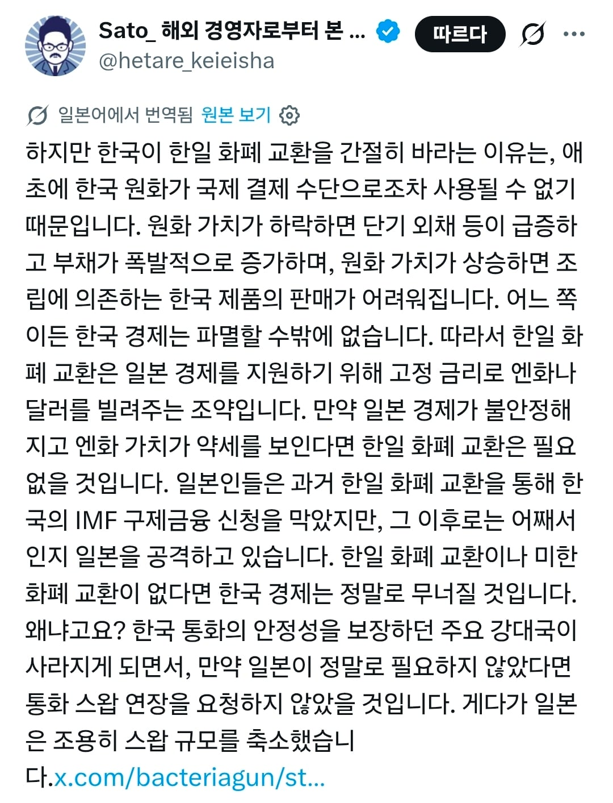

일본이 한국의 생사여탈권을 가지고 있다는 일본인
댓글
IMF외환위기때 통화스와프 있지도않았는데 뭘 막아 줬다는거지
심지어 도와달라니까 거절했음.
유쾌한 드립같은 거 치는 일본햄 기대했는데 병신 잽랜드 원숭이 새끼였네 ㅋㅋㅋ
피융
잽스
엔화가 국재적으로 먹히긴 하는데 그정도는 아니야
그정도는 아냐..
병신
imf때 음흉한 놈들이 오히려 스왑 끊었지 않나?
IMF 때 일본은 한국에서 자금 다 빼가고 스와프 오히려 끊었고 부채도 탕감하라고 전방위로 압박 넣었던 기억이 있음.
트위터는 씹덕짤 긁어오는 용도로만써라..
라인사태며 소부장이며 스와프며
일본이 도와준적 없고
킬각 뜨면 언제든 통수치려고 한 기억밖에 없다
약해지면 아예 숨통을 끊어놓려는 습성은 이미 기본초식이라고 생각하고 있으니까 안심하라구!
그때니들이 통수칠려다 실패한거도 기억함 다른시간선에서는 한국없을지도
???: “우리가 반도체 소재를 끊으면 삼성은 망한다”
굳이 죽자살자하면 거꾸로가 가능성이 더 크지 ㅋㅋ
뭔 하이닉스 없음 엔비디아 망한다같은 소리잖아
원화파워가 엔화보다 약한건 맞는데 일본이 도와줄려고 한적은 없다.
저 사람 매번 저런 글 올리더라
imf때 젤 먼저 뺀 놈이 일본이야 ㅋㅋㅋㅋ
좋아 계속 그대로~
잽민이
일본애들하고 말하다보면
통화스와프 이야기 ㅈㄴ 하더라 ㅋㅋㅋ
그딴거 필요 없고 도움도 안된다 해도
왜 한국은 자꾸 구걸하냐 ㅇㅈㄹ함
그냥 사고가 막혀있음
근데 일본애들 그냥 저러면서 사는게 나음
저러고 잃어버린 50년 당해야 우리는 좋지
이제 자존심 채울 게 그것 밖에 안남아서 그럼
ㅋㅋ 쪼리나?
어차피 달러로 거래할거면서 먼 ㅋㅋ
imf 한창 때 통화스와프 거절하고 imf 조기상환 한달 전에 통화스와프 체결함
일본 자칭 경제통의 특징은 일단 2000년대 초반부터 2010년까지 이야기로 현실을 파악하고 있다는 점.
이게 일본 게시판 문화가 가장 성행할 때 쌓인 정보를 맹목적으로 믿는 것으로 발생하는 건데,
문제는 SNS의 등장으로 자신들끼리 어화둥둥하면서 팩트 체크를 안 하다보니 이런 편견이 한층 더 심화됐다는 거.
약해진 놈들부터 숨통을 끊는다
일본인에게는 상식이라구?
imf 때 어업협정 일방파기하고 신어업협정 밀어붙인 새끼들이 뭔 개소릴
생살여탈권
최소 20년 전부터 듣던 소리다 열등 잽들아 ㅋㅋ